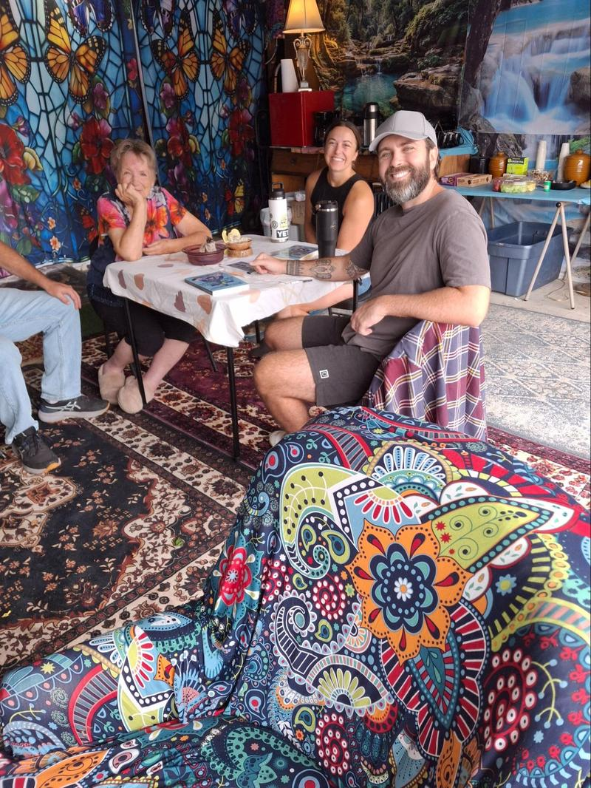
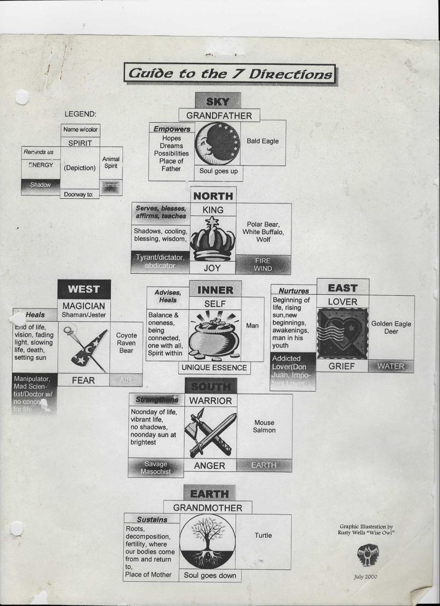
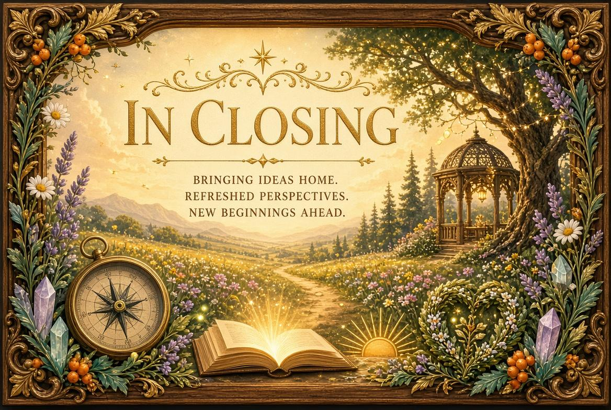

PEPPERWOOD COMMUNITY NEWSLETTER
Information & Entertainment to build community unity
The week is beginning (Oct,8th) with preparations for the first planned get together. We are gathering drinks, snacks and serving paraphernalia. As reported the gathering has been scaled down.
The links work if you download the PDF to read in adobe.

The Gathering

I had scaled down the gathering.I had a grand delusion I was creating and the neighbors would come together and join in an intentional mutual aid community. The reality is that if I say my garage is I would be inviting a plethora of problems and the community needs time to adjust.
The gathering was small. In Attendance: Neighbors Par Excellant, Blake and Shannon, House Mates Matt and Chiwah and myself. It’s a beginning. We will have Saturday morning coffee and donuts. Stop by and meet your neighbors. What take longer take better,
October 10 was dominated by the Venus Rx–Mars square + Libra New Moon (relationship review, passion vs. friction, balance themes), set against the ongoing Venus retrograde in Scorpio and the earlier Mars-Pluto intensity from the start of the month. Yesterday tested my spirit and found me somewhat lacking. It felt like a test of my patience. I got a lot of help from my friends to realize it was a good opportunity to make a tight connection with Shannon and Blake. They like the idea of Saturday morning donuts and coffee.
I enjoy being in My Space, visitors are welcome anytime the door is open. Blake, asked me : is this something with mass appeal that most people can get behind, or do you have a specific vision where you want to enroll like-minded people?
The answer is yes to both. I think most people recognize that we need to come together to reclaim our collective power as we move through this time of tribulation, end-stage capitalism, and the declining empire. And I have a vision that we address our issues and concerns with information so we can make collective decisions that guide us toward our highest and best outcome, replacing the failed experiment of representative government.
When it gets cold and the door is closed I will put out a sign we are open. Text me or knock and I will let you in.
One More Thing To Do
These are turbulent times and most people I know are very busy and near exhaustion. The last thing they want is one more thing to do. I like to write and the newsletter gets long. I get it if you don’t have time or interest and the newsletter is one more thing to do.

How to Start a Movement in Three Minutes
Watch a short video here.
Stages of Empire
Sir John Bagot Glubb’s model (from The Fate of Empires, 1976/1978) is the most widely referenced framework for the stages of an empire.
Glubb studied roughly a dozen empires over ~3,000 years (Assyria, Persia, Rome, the Arab Empire, Ottoman, Spanish, British, and others) and found they typically lasted about 250 years (roughly 10 generations), independent of technology, religion, or geography. He described a recurring pattern of six stages:
- Age of Pioneers (Outburst)
A small, poor, hardy, often overlooked people bursts outward with energy, courage, improvisation, and a strong sense of duty. They are driven more by opportunity and will than by established tradition. - Age of Conquests
Expansion becomes more organized and professional. Military success brings territory and prestige; the aim is often honor and glory. Conquerors adopt and refine the methods and institutions of those they defeat. - Age of Commerce
Focus shifts toward trade, wealth, and profit. Merchants and businessmen rise in influence. Material success begins to compete with older martial or civic virtues, though a sense of national purpose often remains. - Age of Affluence
Great wealth produces luxury, public works, art, and comfort. Duty and self-sacrifice give way to selfishness and defensiveness. What was once luxury becomes ordinary; conquest starts to look immoral or unnecessary. - Age of Intellect
Education, science, and intellectual pursuits flourish and are often seen as a golden age. However, emphasis on cleverness and debate can undermine cohesion, promote internal divisions, and replace decisive action with endless argument. - Age of Decadence
Marked by materialism, frivolity, pessimism, weakening of traditional religion or shared values, an influx of foreigners that is hard to assimilate, the welfare state, and a loss of the sense of duty. The society becomes defensive, internally fragmented, and less willing to make hard efforts.
Glubb noted that decadence stems mainly from prolonged wealth and power rather than external shocks alone; the final collapse is often triggered by outside forces once internal cohesion has eroded. He summarized the stages explicitly as: Pioneers (outburst), Conquests, Commerce, Affluence, Intellect, and Decadence

The Seven Directions
The seven directions appear in the cosmologies and ceremonial practices of many (though not all) Indigenous North American nations. They typically consist of the four cardinal directions plus three more that complete a three-dimensional orientation of the world and the self.
Core Structure
Most commonly the seven are:
- East — Rising sun, new beginnings, vision, spring, birth/childhood, illumination.
- South — Noonday sun, growth, passion, summer, youth, emotional fullness.
- West — Setting sun, introspection, endings, autumn, adulthood/maturity, healing or reflection.
- North — Winter, wisdom, elders, cleansing, endurance, the ancestors.
- Above (Sky / Father Sky / Grandfather) — The heavens, spirit, vision, possibility.
- Below (Earth / Mother Earth / Grandmother) — Grounding, roots, fertility, the body, where life emerges from and returns to.
- Center (Within / Self / Heart) — The meeting place of all directions; the individual, balance, and the inner spirit or unique essence.
These form part of the broader Medicine Wheel (or Sacred Hoop) framework used by many Plains, Woodland, and other nations. Physical stone medicine wheels (some ancient) often align with cardinal points, while ceremonial and teaching uses expand to include Sky, Earth, and Center. Movement is usually clockwise (“sunwise”). Colors, animals, elements, plants, and life stages associated with each direction vary significantly by tribe and teaching lineage (e.g., Lakota, Ojibwe/Anishinaabe, Cherokee, Lunaape/Mohican, and others). There is no single universal system.
Seven is frequently a sacred number alongside four, appearing in stages of life, teachings, or cosmological mappings in various nations.

This chart is a clear example of a 2000-era interpretive guide that uses the seven-directions framework as a map for personal balance, shadow work, and masculine archetypes. It reflects a particular modern synthesis rather than a single authoritative Indigenous source.
Key associations on the chart include:
- Sky / Grandfather — Empowers (hopes, dreams, possibilities); Bald Eagle; soul goes up.
- North / King — Serves, blesses, affirms, teaches; Polar Bear, White Buffalo, Wolf; Joy; Fire/Wind; shadow: tyrant/dictator or abdicator.
- West / Magician (Shaman/Jester) — Heals; Coyote, Raven, Bear; Fear; Air; shadow: manipulator or mad scientist/doctor without conscience.
- Inner / Self — Advises and heals; balance and oneness; Man; Unique Essence.
- East / Lover — Nurtures; Golden Eagle, Deer; Grief; Water; shadow: addicted lover / Don Juan / impotent lover.
- South / Warrior — Strengthens; Mouse, Salmon; Anger; Earth; shadow: savage or masochist.
- Earth / Grandmother — Sustains (roots, decomposition, fertility); Turtle; soul goes down

It Feels Great and It’s Less Filling
I found something I like to do to serve the community: cutting up cardboard boxes.
When I was transforming my space, I ended up with a lot of boxes, and I enjoyed cutting them up. Well, guess what? I found all kinds of boxes in the recycle bins and behind the dumpster — and tonight I found a bunch in the dumpster itself.
When I did the story on dumpster hygiene, I learned that if the lid won’t close, they won’t empty the dumpster. And if they do empty it, we get a fine.
Last night I went to my left and found four recycle bins that wouldn’t close. So I dug out all the boxes that hadn’t been broken down. Long story short, I did a good job and got all the bins closed. Then I decided to take my recycling to the dumpster, and the dumpster lid was open. I used to leave it open because it’s easier to use that way, but I learned there’s a good reason the lid should be shut. When I went to close it, it was full of big boxes. Yeah! And one of our bins wouldn’t close either. Again, I did a good job, freed up the dumpster, and closed the bins. There wasn’t room for my stuff, though, so I put it in a tub someone had left behind the dumpster.
I like cutting cut up boxes so don’t put them in the bins unless they are broken down. Then I won’t have to dig them out.
I like doing this, and Mick has been doing it for years, so he likes me doing it too. Please don’t take advantage of that and skip good dumpster hygiene. Be respectful of others, and be of good cheer.
Thanks for helping keep the bins and dumpster usable for everyone. A little care goes a long way — and it keeps us from getting fined.
Saturday Morning Coffee and Donuts
At the gathering Chiwah’s idea to be open to every Saturday morning was discussed and agreed that we would hold space Saturday mornings with coffee and donuts for an open garage. Neighbors are welcome starting around 9ish.
A seed is planted for an integrated community of friends. Blake and Shannon’s commitment feels like the support to grow from the I don’t know, what community at Pepperwood serves our highest best good.

What a strange week it was. Record heat wave followed by a tropical storm and now cooler weather. I don’t normally talk about the weather. It is filler speech, but this weather is worthy of note. This was predicted and we did nothing. Now it is happening and still we do nothing.
We are in the 6th great extinction and climate change is hastening the event. It was my intention to bring the community together to be one of a vast network of communities deciding our future rather than waiting for a government that is corrupt and doesn’t care. But alas we are like the carpenter cutting wood with a hand saw being offered a electric saw and says he doesn’t have time for that I got to get this wood cut.
Logically we as a species are not going to survive. Lucky the universe doesn’t operate on logic. I still have hope that enough of us will come together to create the tipping point for collective action and we can invoke the magic from the mystery and create a new paradigm of trust and abundance.
For now join my housemates, the neighbors Par Excelant and me, for coffee and donuts every Saturday morning. Until then be of good cheer, spread love and bring a friend.